GaussView 6：界面与基础操作（p.5–15）¶
主界面、工具栏、分子/视图、多视图窗口、鼠标、菜单、偏好设置、技巧提示
原文件：
../gview6官方说明书.md（全量单文件存档）｜图片目录：../imgs/
GaussView 界面¶
GaussView 主界面由多个窗口组成，此外在工作过程中还会出现其他对话框。下图展示了一个简单会话，其中用户刚刚开始构建一个分子：
桌面上的 GaussView 在这里可以看到 GaussView 的几个特性。在顶部，我们看到 GaussView 主控制面板，其中包含菜单栏、多种工具栏和当前片段（Current Fragment）区域。在其下方右侧，是用于选择官能团和单个原子以添加到分子中的调色板（注意，根据用户偏好，这些调色板可以以模态或非模态模式工作）。左下角是包含正在构建的分子的活动视图窗口。
GaussView 界面由以下主要部分组成：
-
包含菜单栏和构建器片段（Builder Fragment）显示区域（灰色背景）的控制面板。
-
各种工具栏。默认情况下，这些工具栏位于控制面板中菜单栏的下方，但也可以根据需要分离出来（见下文）。它们也可以在控制面板内根据需要重新排列。这就是您的工具栏可能与上图不同的原因。
-
一个或多个分子视图窗口（View window）（默认蓝色背景）。
-
与各种 GaussView 功能相对应的对话框。
-
控制程序各方面运行的偏好设置（Preferences）。
分子出现在视图窗口中，并可以在其中修改。请勿将主工具栏下方的构建器片段显示区域误认为视图窗口；它显示的是下一次鼠标点击时将添加到当前分子的项目。
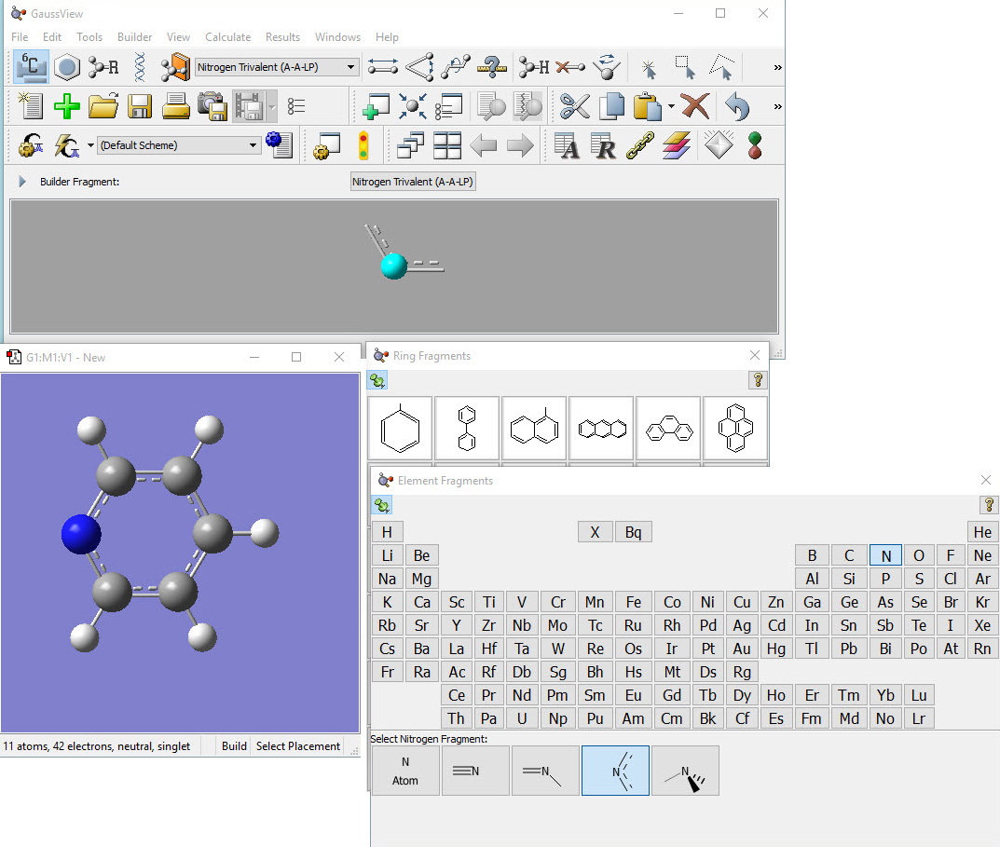
GaussView 工具栏¶
GaussView 控制面板中默认出现在菜单栏下方的工具栏如下逐一图示。此处提供了各种图标的说明。
独立模式下的 GaussView 工具栏
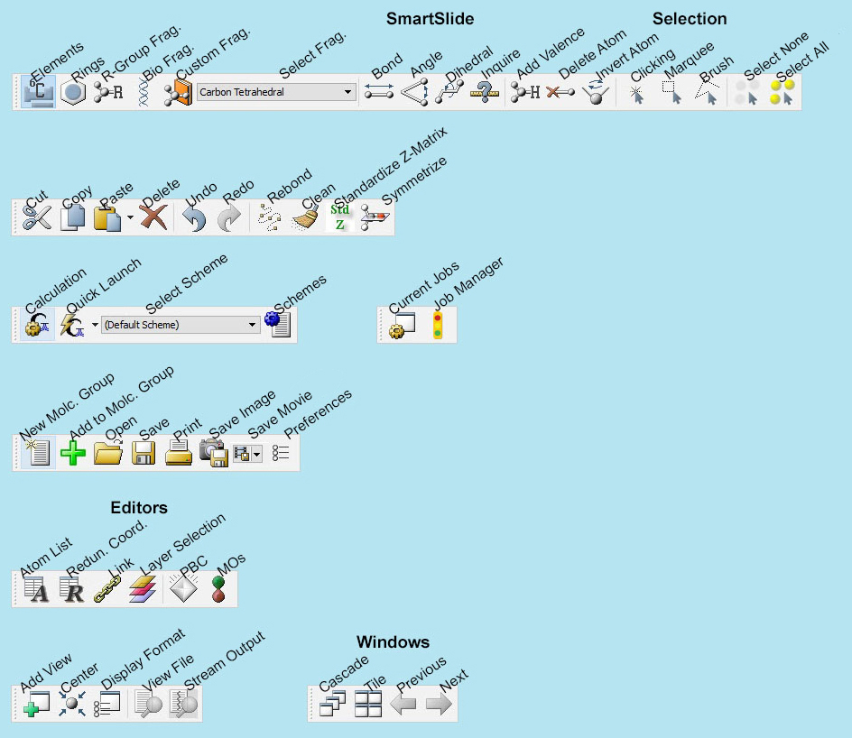
GaussView 构建器调色板 右侧的构建器（Builder）调色板可通过视图（View）=>构建器（Builder）菜单路径打开。
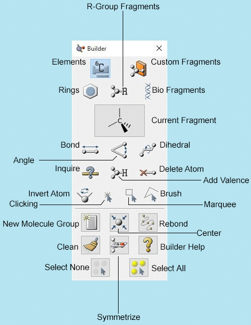
您可以通过抓住单个工具栏的手柄并将其拖出工具栏区域，来将该工具栏从主工具栏分离。要重新附加独立工具栏，可以将其拖回主工具栏，或双击它。
构建器（Builder）工具栏也可以显示为独立调色板（如上右侧图所示）。您可以通过视图（View）=>构建器（Builder）打开它。
分子、分子组和视图¶
GaussView 使用以下概念来组织任何时候正在使用的众多分子：
-
分子（molecule）通常是指孤立于其他可能同时打开的分子而正在处理的一个分子。一个分子通常对应于磁盘上存储的单个文件。这些有时也称为模型（model）。注意，此意义上的一个分子可能包含不止一个化学物种（即通常化学意义上的“分子”）。
-
如果同一个分子打开了不止一个窗口，则不同的窗口称为视图（view）。相应地，视图窗口（View window）显示一个分子，不同的视图和视图窗口可以显示同一分子的不同取向和属性。
-
分子组（molecule group）是作为一个整体处理的一个或多个分子的集合。包含多个分子的分子组会在组合视图窗口的单独子窗口中显示每一个分子（见图 4）。分子组也称为模型组（model group）。
视图窗口标题栏显示有关当前分子组、分子和视图的信息：每个不同的分子组由一个图标标识，其颜色与之唯一对应。下图显示了来自两个不同视图窗口（每个对应不同的分子组）的颜色图标。与该分子组直接相关的所有对话框都将使用相同的颜色图标，以便在视觉上与其父分子组关联（包括使用视图（View）=>添加视图（Add View）创建的新视图）。该颜色图标还用于在窗口（Windows）菜单中标识分子组。
来自 2 个不同视图的颜色图标 左侧图标对应于第 1 个分子组（红色）中的第 4 个分子，而右侧图标是第 2 个分子组（绿色）中第 1 个分子的第 2 个视图。同一个颜色图标将出现在与该分子相关的所有对话框中。对于某些操作系统，颜色图标位于状态栏中。
除颜色图标外，每个视图窗口还由其组/分子/视图标识符唯一标识。该标识符由分子组（G）、分子编号（M）和视图编号（V）组成。分子组中的每个分子按顺序编号，从 1 开始。如果删除组中的一个分子，将重新编号以保持连续序列。
注意，与分子编辑功能相对应的对话框是针对特定分子的。如果您在原子列表编辑器（Atom List Editor）打开的情况下激活了不同的视图窗口，其上下文不会随之切换。请查看对话框的标题标签，以确定其对应的视图窗口。
在分子窗口内的任何位置点击右键都会弹出上下文菜单。上下文菜单的内容复制了构建器、菜单栏和工具栏中的大部分内容。这是为方便用户而提供的。
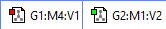
视图窗口上下文菜单 上下文菜单中的每个选项都会弹出包含相关项目的子菜单。
使用多视图窗口¶
对于包含多个分子的分子组，有两种显示模式。单视图模式一次显示一个分子（如下图中左侧）。当前分子编号显示在工具栏中。
在单视图窗口中，点击多视图图标
将进入多视图模式，其中可以一次查看多个分子（如下图中右侧）。请注意，仅当分子组中有多于 1 个分子时，工具栏中的多视图字段和控件才会出现。该图标在两种形式之间切换，具体取决于当前视图模式。
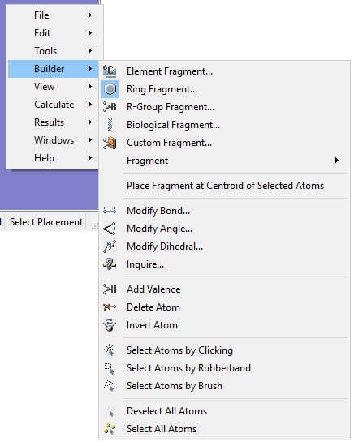
包含 12 个分子的分子组 各个分子视图包含在更大的多视图窗口内。每个框架的标题栏中显示分子编号。当前活动的分子以稍浅的背景显示，以区别于其他分子，并且是参与原子选择或对话框操作的分子。点击某个非活动分子的单个分子窗口将使其成为活动分子。如果并非所有单个分子都能放入视图窗口，可以使用滚动条在不同分子之间移动。
点击多视图图标右侧的小三角会显示多视图显示模式（Multiview Display Mode）上下文菜单：
多视图模式内容菜单 您也可以通过右键点击多视图显示区域的标题栏来打开此菜单。该菜单控制多视图显示模式的布局和行为：
- 工作区背景颜色（Workspace Background Color）：修改当前窗口的背景颜色。
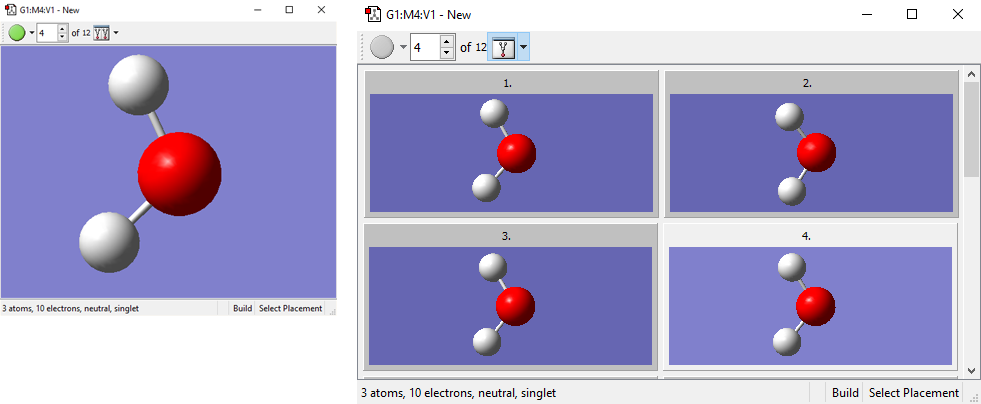
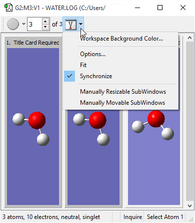
-
选项（Options）：打开多视图选项（MultiView Options）对话框（见下文）。
-
适应（Fit）：调整所有单个分子框架的大小，使其全部在窗口中可见。
-
同步（Synchronize）：链接所有框架，使在一个框架中的鼠标操作影响所有框架（例如旋转）。默认情况下，每个视图是独立的。
-
可手动调整大小的子窗口（Manually Resizable SubWindows）：允许通过点击并拖动右下角的三角来手动调整子窗口的大小。
-
可手动移动的子窗口（Manually Movable SubWindows）：允许通过点击并拖动子窗口的上部来手动移动子窗口。
自定义多视图窗口¶
多视图选项对话框 上方标为“收起（Less）”的按钮用于关闭对话框的下半部分，当下方显示隐藏时其标签为“展开（More）”。
多视图选项（MultiView Options）对话框中的各种控件用途如下：
-
可见行（Visible Rows）和可见列（Visible Columns）：多视图窗口中最初显示的单个框架的行数和列数。
-
滚动（Scrolling）：滚动条的位置。
-
自动适应子窗口（Auto Fit SubWindows）：取消勾选时，调整多视图窗口的大小不会影响单个框架的大小，因此窗口变大时通常可见更多框架。勾选时，每当主窗口调整大小，单个框架也会调整，以始终显示相同数量的框架（基于指定的行和列值）。
按下展开（More）按钮后可见以下控件：
-
工作区边距（Workspace Margin）、水平间距（Horizontal Spacing）和垂直间距（Vertical Spacing）：单个视图子窗口块周围以及各列和各行之间（分别对应）的填充。
-
边框（Borders）、标题（Titles）、题注（Captions）和编号（Numbers）：勾选时，边框（Borders）在单个视图框架上显示边框。标题（Titles）和编号（Numbers）控制每个框架标题栏中是否显示任务（job）标题和结构编号。题注（Captions）整体控制标题栏文本，取消勾选则无论其他项如何设置都将隐藏所有文本。
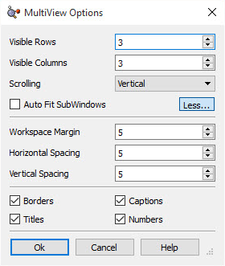
从分子组中删除视图¶
当您不再需要分子组中的视图时，编辑（Edit）=>删除（Delete）菜单路径将删除当前分子及其视图。工具栏上的删除（Delete）按钮可执行相同功能。请注意，如果当前视图中有原子被选中，则这两种删除功能都只会删除这些原子，而保留其余部分。
如果要删除所有原子但在分子组中保留空视图，请点击工具栏上的选择所有原子（Select All Atoms）按钮，然后执行上述两种删除操作之一。这将清空视图窗口。
剪切（Cut）按钮和编辑（Edit）=>剪切（Cut）与删除（Delete）功能相同，只是它会将分子（或原子）放入剪贴板以备后用。
动画多个结构¶
对于多视图分子组，点击工具栏中的绿色运行（run）按钮将使视图窗口依次显示组中的每个分子，并持续循环整个列表直至停止。这具有将分子序列像电影一样进行视觉动画的效果。这对于动画一系列相关几何结构特别有用，例如反应路径（Reaction Path）图。按下绿色运行按钮后，它会变为红色停止（stop）按钮，点击可停止动画。
动画播放控件
动画按钮旁边的小三角包含一个小菜单。重复（Repeats）按钮允许用户指定动画播放的次数。序列（Sequence）按钮允许用户指定动画的播放方式。帧延迟（Frame Delay (msec)）按钮以毫秒为单位指示每帧之间的延迟时间。端点延迟（Endpoint Delay (msec)）按钮以毫秒为单位指示动画端点与下一次循环之间的延迟时间。
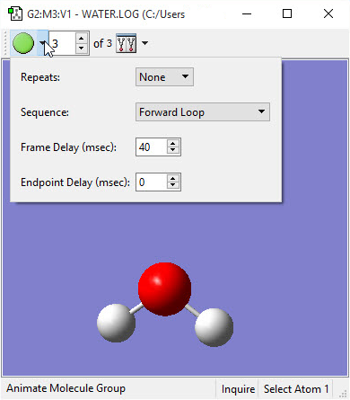
使用鼠标¶
与分子的交互围绕三键鼠标的移动而设计。下表描述了鼠标按键的功能：
注意，这些鼠标操作在任何分子显示中都有效（包括 GaussView 对话框中的显示）。
将鼠标操作限制为一个片段¶
如果两个项目彼此没有键合（在屏幕上没有可见化学键连接），您可以按住 Alt 键并移动光标，在屏幕上单独操作它们。使用 Alt 键时，只有离光标最近的片段会受到影响。因此，Alt-Shift 或 Alt-中央鼠标按钮可让您仅拖动最近的片段。
GaussView 菜单¶
GaussView 包含以下菜单，各自具有所示的一般用途：
-
文件（File）：创建、打开、打印和保存结构和影片，以及设置 GaussView 偏好设置。
-
编辑（Edit）：对整个结构执行配置任务。
-
工具（Tools）：针对特定构建任务和计算类型的专用功能。
-
构建器（Builder）：创建和修改分子结构和结构参数。
-
视图（View）：管理和交互分子的显示。
-
计算（Calculate）：设置和提交 Gaussian 计算，并查看当前 GaussView 发起的任务（job）。
-
结果（Results）：检查计算结果，包括表面（surface）、光谱（spectrum）、图形和动画。
-
窗口（Windows）：管理各种 GaussView 窗口。
-
帮助（Help）：查看 GaussView 和 Gaussian 的帮助文件，以及 GaussView 技巧提示。
此处提供了列出所有 GaussView 菜单项和工具栏图标的参考表。
| 鼠标按键 | 等效操作 | 动作 |
|---|---|---|
| 三键（3-Button） | 单/双键等效操作（1,2-Button Equiv.） |
操作（Action） |
| Left | Left | Click |
| Click (C key pressed) | ||
| Drag (R key pressed) | ||
| Drag (P key pressed) | ||
| Drag Left/Right | ||
| Drag Up/Down | ||
| Center | Shift-Left | Drag |
| Right | Ctrl-Left | Drag Left/Right |
| Drag Up/Down | ||
| Click in an open area | ||
| Shift-Click on atom |
GaussView 偏好设置¶
许多 GaussView 功能的默认设置可通过偏好设置进行自定义，可通过文件（File）=>偏好设置（Preferences）菜单路径打开。提供以下偏好设置：
-
构建（Building）：指定高级片段放置选项的默认设置。
-
电荷分布（Charge Distribution）：指定显示原子电荷和偶极矩数据的所需设置。
-
清理控制（Clean Controls）：设置结构清理功能的可调参数和控件。
-
颜色（Colors）：自定义各种 GaussView 显示的颜色。
-
自定义键合参数（Custom Bonding Parameters）：指定用于识别/指定键类型的数据。
-
桌面（Desktop）：定义与 Gaussian 和 GaussView 文件扩展名关联的文件关联（仅 Windows 版本）。
-
显示格式（Display Format）：该类别细分为四个单独的类别：常规（General）、分子（Molecule）、表面（Surface）和文本（Text）。
-
文件/目录（File/Directory）：设置各种 GaussView 环境的首选目录位置。
-
字体（Font）：指定 GaussView 界面使用的字体。
-
Gaussian 设置（Gaussian Setup）：设置首选的 Gaussian 计算设置（Calculation Setup）对话框设置。
-
图标（Icons）：设置用户界面中的默认图标大小。
-
图像（Image）：设置捕获图像的首选值。
-
任务设置（Job Setup）：定义 Gaussian 及相关任务（job）的执行过程。
-
影片、动画（Movie, Animation）：指定 GaussView 创建的动画的偏好设置。
-
打印（Print）：设置打印图像的首选值。
-
振动（Vibrations）：设置首选的显示振动（Display Vibrations）对话框设置。
-
窗口行为（Window Behavior）：设置对话框的首选行为。
所有偏好设置对话框都包含几个按钮：确定（Ok）（保存当前设置并退出）、取消（Cancel）（退出并放弃未保存的更改）、默认（Default）（恢复 GaussView 的安装设置）和帮助（Help）（获取在线帮助）。使用默认（Default）按钮时，将出现如下所示的对话框：
恢复默认偏好设置 当您点击偏好设置中的默认（Default）按钮时，您可以选择恢复所有默认偏好设置，或仅恢复与当前对话框相关的设置（此处为振动（Vibrations）的默认偏好设置）。
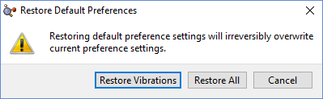
显示 GaussView 技巧提示¶
帮助（Help）=>GaussView 技巧（GaussView Tips）菜单路径可打开 GaussView 技巧窗口，其中显示有效使用程序的各种技巧。您也可以使用窗口底部的复选框选择在每次启动 GaussView 时显示一条技巧（默认未勾选）。
GaussView 技巧 勾选“启动时显示技巧（Show tips at startup）”可在每次启动 GaussView 时查看一条技巧。
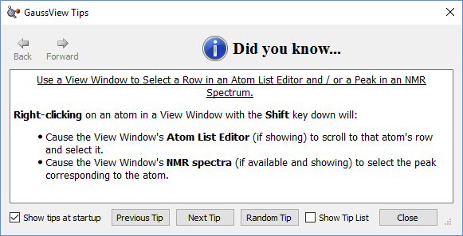